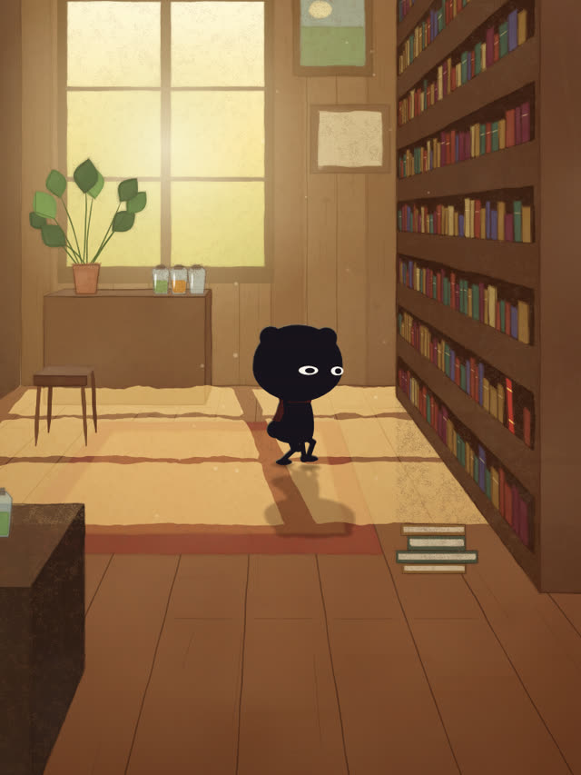
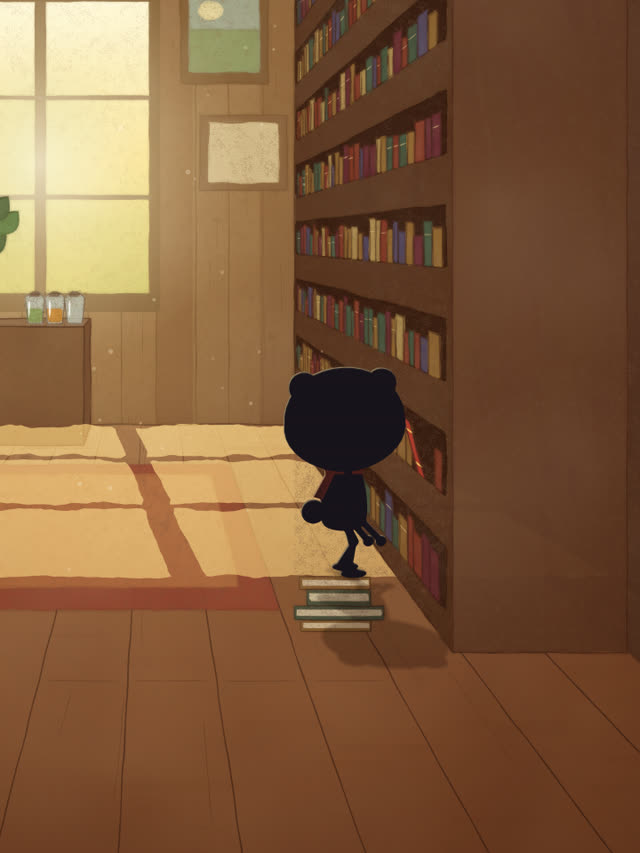
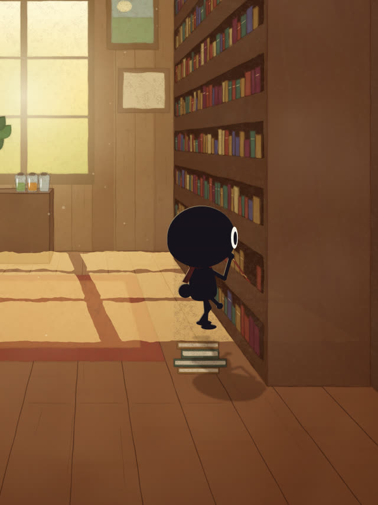
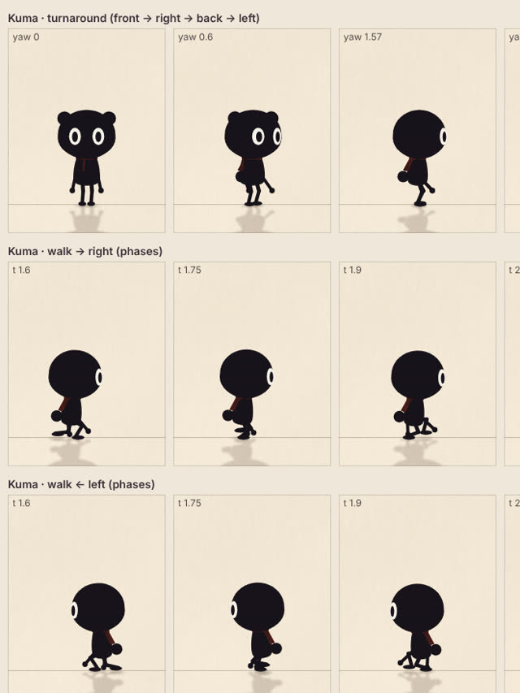

작업 흐름
- 입력
- 착각 한 줄(예: 책을 당기면 비밀 문이 열리는 줄 알았다, 누르면 토스트가 나오는 줄 알았다)
- 브리프
- 착각이 생긴 까닭과 안 되는 까닭, 실루엣(귀 · 눈 · 꼬리 · 크기 · 옷 색 하나), 방(장소 · 시간 · 창 · 팔레트 · 잡동사니 · 해 보는 물건), 도착 → 보기 → 해 보기 → 기다림 → 더 크게 → 아무 일 없음 → 그다음의 박자표, 소리
- 만들기
- 캐스트 시트(한 바퀴 돌기 · 좌우 걷기 · 발을 옮겨 도는 회전 · 좌우 큰 동작 · 표정)를 먼저 채점하고, 원근 방 키트로 방을 칠하고, 움직이는 부품을 손 목표와 같은 시간 함수로 키잉
- 확인
- 결정성, 매 순간 살아 있음, 칠한 방(평평한 면 없음) · 창이 가장 밝음 · 먹빛 몸 · 옷 색 하나, 무릎 · 발 닿음 · 디딘 발 고정 · 목 · 걷는 방향 · 손이 물건에 닿음, 깜빡임 · 큰 동작의 모으기와 회복 · 발 딛는 회전 · 박자(해 보기 · 기다림 · 그다음) · 한 줄 문구, 소리
- 출력
- 소리가 있는 1080×1440 MP4(24 fps), 문구 파일, 클릭하면 소리가 나는 라이브 페이지, 스틸, 콘택트 시트, 캐스트 시트
node shadow-critter-vignette/scripts/new-vignette.mjs my-vignette
node shadow-critter-vignette/scripts/render.mjs my-vignette/index.html --cast
node shadow-critter-vignette/scripts/check.mjs my-vignette/index.html
node shadow-critter-vignette/scripts/render.mjs my-vignette/index.html --sheet 12 --scale .5
node shadow-critter-vignette/scripts/render.mjs my-vignette/index.html요구 사항: Node 18+와 Playwright Chromium, ffmpeg. 네트워크 · npm 설치 · GPU가 필요 없습니다(12초 영상 렌더가 약 30초). 단계별 순서는 SKILL.md에 있습니다.
샘플
원본 영상에 없는 착각 두 개를 브리프부터 새로 만든 영상의 장면입니다. 카드를 누르면 새 탭에서 그 순간부터 라이브 페이지가 열립니다. 브라우저가 같은 코드로 그리고 소리를 냅니다.
책을 당기면 비밀 문이 열리는 줄 알았다 예제 · 12.8초
해 질 녘 오래된 서재. 곰 귀에 빨간 목도리를 한 쿠마가 창가에서 걸어와 책장 앞에 섭니다. 한 권만 살짝 튀어나온 빨간 책은 영화 속 비밀 문 손잡이처럼 보입니다. 발끝으로 서서 당기고, 문이 열릴 벽 쪽을 바라보며 기다리고, 웅크렸다가 뛰어올라 세게 당기지만 책만 기울 뿐입니다. 시무룩하게 책을 도로 밀어 넣고 발을 옮겨 돌아서서 창가로 걸어갑니다.




누르면 토스트가 나오는 줄 알았다 시작 템플릿 · 11.4초
new-vignette.mjs가 복사하는 시작 템플릿입니다. 아침 부엌. 쥐 귀에 겨자색 반바지를 입은 츄가 낮은 의자 위 토스터의 레버를 발끝으로 서서 누르고, 고개를 갸웃하며 기다립니다. 레버는 ‘띵’ 하고 빈 채로 튀어 오릅니다. 두 손으로 뛰어올라 다시 눌러도 마찬가지라, 빈 구멍을 들여다보고 돌아섭니다.
실제 작품
이 레포에서 만든 스킬입니다. シャンプー台_Ⅰ(@FromUltraViolet)가 X에 올린 10초짜리 AI 영상이 출발점입니다. 햇빛 드는 수채화 가게에서 초록 치마를 입은 작은 검은 고양이 실루엣이 자판기 앞에서 발끝으로 서서 여기저기를 눌러 보고, 기다리다가 돌아서고, 글은 「あのへんを押せば出てくるのだと思ってた(저 근처를 누르면 나오는 줄 알았다)」 한 줄입니다. 이 스킬은 그 형식(고정 한 컷, 아이의 착각을 해 보기 → 기다림 → 돌아섬, “~하는 줄 알았다” 한 줄)과 그림(흰 눈의 먹빛 실루엣, 뒤에서 빛이 드는 수채화 실내)을 가져와 어떤 착각이든 코드로 만들 수 있게 했습니다. 원본의 자판기 · 가게 · 고양이 · 프레임은 쓰지 않았고, 시작 템플릿과 예제는 모두 이 레포의 것입니다. AI 영상은 참고로만 보았고 레포에 넣지 않았습니다.
링크
- SKILL.md 워크플로
- 폴더 lib · scripts · references · templates · examples
- README.md 빠른 시작
- references/BRIEF.md 브리프 틀과 채점 기준
- references/LOOK.md 실루엣 · 방 · 화면 · 소리의 그림체
- references/CRITTER.md 실루엣 리그, 관절 범위, 캐스트 시트
- references/ROOM.md 원근 카메라 · 면 맵 · 방 키트 · 빛
- references/MOTION.md AI 티 없애기: 박자 · 디딘 발 · 큰 동작 · 물건을 타는 손
- references/SOURCE.md 원본 게시물, 가져온 것과 가져오지 않은 것
- references/LESSONS.md 겪은 문제와 해결